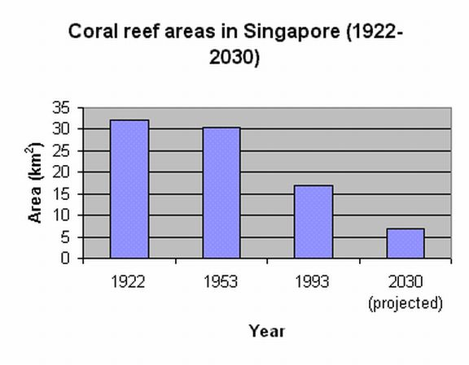
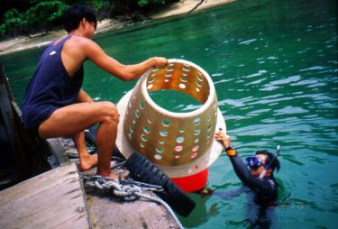
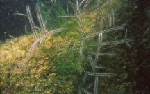
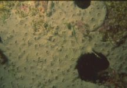
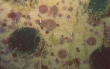
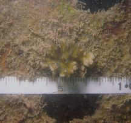
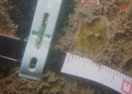
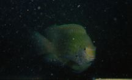

Artificial Reefs in Singapore?
Loh Tse-Lynn
"Artificial reefs in Singapore? Whatever for? You mean there are reefs in Singapore?" My lunchmate asked when I told him more about the project I was working on. Contrary to popular belief, there are reefs still existing in Singapore. Some of these reefs, like those at Pulau Hantu and Raffles Lighthouse have good live hard coral cover which in turn support a whole community of other reef organisms.
|
On the whole, coral reefs in Singapore have suffered a decline in habitat cover mainly through coastal developments that have taken place over the years since the 1960s. Land reclamation and coastal dredging to deepen shipping channels have removed many coral reefs from the coasts and islands of Singapore, and increased the sediment load in the seawater. |
 Figure derived from Hilton & Manning (1995) |
A diver looking at the coral reefs of Singapore would see that areas not colonised by reef organisms usually comprise of coral rubble. Coral larvae swimming in the water column would typically settle on a stable structure like a dead coral colony which is attached to the reef structure before setting down a skeleton and developing into a mature colony. We call this process of settling and initial growth 'recruitment'. Coral recruits find it hard to settle on Singapore reefs, as rubble does not provide a stable enough structure for a colony to grow on. The growing recruits could be washed away, overturned or abraded by water currents and surge. To help overcome this lack of stability on the rubble-dominant reef, we decided to set down artificial reef units at selected sites around the Southern Islands and hopefully increase the incidence of coral recruitment on those reefs.
Reef managers around the world have been using artificial reef units made from concrete, such as Reef Balls, and tyres. While these materials have a proven track record, they are not suitable for deployment on our reefs. The need to use barges and cranes to ferry these heavy materials makes it difficult to deploy such units in Singapore's shallow reefs. We needed something strong and cost-effective but light enough to enable divers to handle underwater without any aid from heavy machinery, and so decided to use fibreglass.
|
Each Reef Enhancing Unit (REU) measures 70 cm in diameter and 50 cm in height. Holes were cut in the walls of the units to allow water to flow through and calcium carbonate was added to the fibreglass mixture to enhance coral development. They are attached to the reef floor using 40-70 cm long iron stakes. Over the last 2 years, 85 such REUs, sponsored by the Singapore Tourism Board, were deployed at reef sites at St John's Island and Raffles Lighthouse by Marine Biology Laboratory researchers and volunteer divers. They were then monitored regularly for types of growth and coral recruitment. |
 Volunteer divers deploying the Reef Enhancing Unit (REU) at the fringing reef of St John's Island. |
Initially, like many other surfaces on the reef, the REUs were covered by a fine layer of algae, followed by other opportunistic organisms like hydroids and ascidians. However, after some time, it was encouraging to note the increased cover of coralline algae on the REUs. Coralline algae is a reddish encrusting algae that has been shown to be important for coral recruitment. The coralline algae contain chemical cues which attract coral larvae to settle on surfaces. This alga is usually relatively rare to find on Singapore reefs.
|  |  |  |
Left: hydroids; center: encrusting ascidians; right: coralline algae patches
|    |
After 13 months, we spotted recruits of Pocillopora damicornis growing on the sides of the REUs. Other species such as Acropora spp. were spotted one month later. The REUs did not just support benthic organisms, and some fish were observed to be interacting with the system as well. Damselfish adopted some units and fiercely defended against intrusions (or innocent scientists trying to collect data). Colourful egg sheets thought to be laid by pomacentrid fish were found on the interior walls of the units. Thus, REUs also contribute to increases in some fish populations. Wrasses fed off the algae growing on the units, and a large grouper was spotted resting under one of the units at Raffles Lighthouse. |
Top: Pocillopora recruit; middle: Acropora recruit; bottom: a defensive damselfish--ignore at your own risk!
The preliminary project was conducted over 2001-2002, jointly supported by the National University of Singapore and the Singapore Tourism Board.